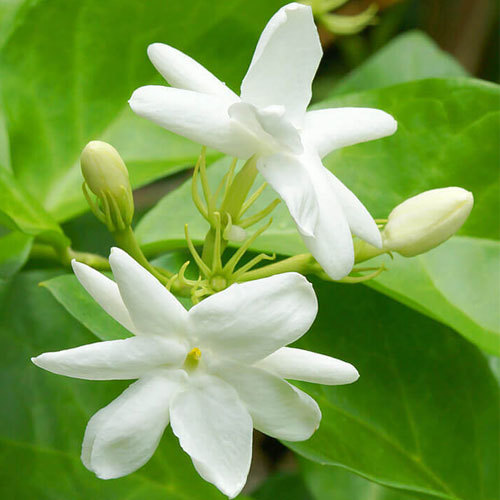
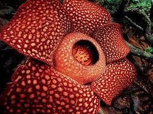

test2flower website
THIS IS A FLOWER WEBSITE
This is a website that deals with different species of flowers you can see around.A flower, sometimes known as a bloom or blossom, is the reproductive structure found in flowering plants (plants of the division Magnoliophyta, also called angiosperms). The biological function of a flower is to affect reproduction, usually by providing a mechanism for the union of sperm with eggs. Flowers may facilitate outcrossing (fusion of sperm and eggs from different individuals in a population) resulting from cross pollination or allow selfing (fusion of sperm and egg from the same flower) when self pollination occurs. Some flowers produce diaspores without fertilization (parthenocarpy). Flowers contain sporangia and are the site where gametophytes develop. Many flowers have evolved to be attractive to animals, so as to cause them to be vectors for the transfer of pollen. After fertilization, the ovary of the flower develops into fruit containing seeds.
THE MOST SMELLED FLOWER
THE MOST NOT SMELLED FLOWER
THE DIFFERENT TYPES OF FLOWERS
Gynoecium (from Greek gynaikos oikia: woman's house): the innermost whorl of a flower, consisting of one or more units called carpels. The carpel or multiple fused carpels form a hollow structure called an ovary, which produces ovules internally. Ovules are megasporangia and they in turn produce megaspores by meiosis which develop into female gametophytes. These give rise to egg cells. The gynoecium of a flower is also described using an alternative terminology wherein the structure one sees in the innermost whorl (consisting of an ovary, style and stigma) is called a pistil. A pistil may consist of a single carpel or a number of carpels fused together. The sticky tip of the pistil, the stigma, is the receptor of pollen. The supportive stalk, the style, becomes the pathway for pollen tubes to grow from pollen grains adhering to the stigma. The relationship to the gynoecium on the receptacle is described as hypogynous (beneath a superior
SOME CLASSIFICATIONS OF FLOWERS
- good flower
- bad flower
- smelly flower
- ruflesia
- jasmine
- lilly
- hibuscus
TO KNOW MORE OF FLOWERS
THE MOST SMELLED FLOWER

ium (from Greek gynaikos oikia: woman's house): the innermost whorl of a flower, consisting of one or more units called carpels. The carpel or multiple fused carpels form a hollow structure called an ovary, which produces ovules internally. Ovules are megasporangia and they in turn produce megaspores by meiosis which develop into female gametophytes. These give rise to egg cells. The gynoecium of a flower is also described using an alternative terminology wherein the structure one sees in the innermost whorl (consisting of an ovary, style and stigma) is called a pistil. A pistil may consist of a single carpel or a number of carpels fused together. The sticky tip of the pistil, the stigma, is the receptor of pollen. The supportive stalk, the style, becomes the pathway for pollen tubes to grow from pollen grains adhering to the stigma. The relationship to the gynoecium on the receptacle is described as hypogynous (ben
THE MOST NOT SMELLED FLOWER

ium (from Greek gynaikos oikia: woman's house): the innermost whorl of a flower, consisting of one or more units called carpels. The carpel or multiple fused carpels form a hollow structure called an ovary, which produces ovules internally. Ovules are megasporangia and they in turn produce megaspores by meiosis which develop into female gametophytes. These give rise to egg cells. The gynoecium of a flower is also described using an alternative terminology wherein the structure one sees in the innermost whorl (consisting of an ovary, style and stigma) is called a pistil. A pistil may consist of a single carpel or a number of carpels fused together. The sticky tip of the pistil, the stigma, is the receptor of pollen. The supportive stalk, the style, becomes the pathway for pollen tubes to grow from pollen grains adhering to the stigma. The relationship to the gynoecium on the receptacle is described as hypogynous (ben
LOGIN PAGE